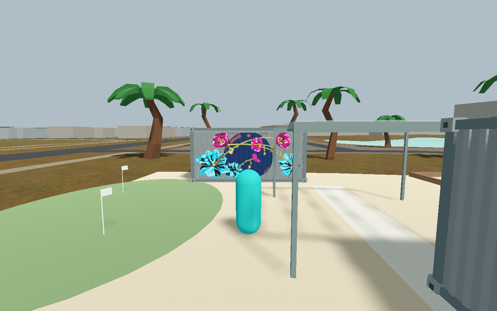

Scoped private-preview source/safety and independent static visual review passed. Upright botanical paint and the solid navy field now follow the existing corrugated wall. Normal-main integration, gameplay/mechanics, release and recognition credit remain unverified or unchanged.

Uncropped 1440×900 native originals, identical camera/player positions and matched pose/light/environment. Camera-forward differs by at most 1.49×10⁻⁸. Player and canopy obscure some detail; small text is not fully assessable at this distance.
Source-inspired artwork generated with built-in image_gen on 2026-10-02. Reference: Official Mersea website · official mural photograph (date unknown; not embedded or copied here). Artistic approximation, not as-built reconstruction.
Scope, provenance, selected prompt and portability limits · selected artwork. Archived source has a path-only adaptation after native capture and has not been executed.